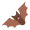

台灣蝙蝠學會
Bat Association of
Taiwan

最新消息
2023 玉兔迎春 福兔迎祥
祝福各位蝠友 揚眉兔氣 鴻兔大展！
渦渦渦～ 大家新年快樂！轉瞬間跑了365個日夜老虎大爺就這麼的溜走了，緊接著上場接棒的最可愛的小兔兔！
大家可要知道，在臺灣也有以兔兔為名的蝠蝠呢許多研究人員心目中覺得超可愛的“兔耳蝠”，可是專屬於臺灣的特有種類喔，正式的名稱是臺灣長耳蝠，中高海拔的森林是牠們的家，跟身體一樣長的大耳朵是招牌特徵！最有趣的是平常休息的時候會把長耳朵放下來背在背上，飛行的時候才把長耳朵立起來聽聲辨位。
不知道大家對於蝙蝠有什麼印象呢？